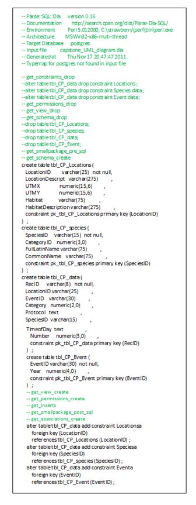
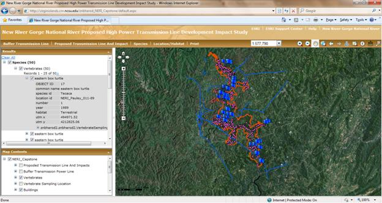

The capstone assignment (Comprehensive Project Development) is based on an investigation of possible location for new high power transmission line within New River Gorge National River. We have to create a web based map application that allows for the query and interactive spatial analysis of the datasets. This can be used to determine the impact of proposed transmission line on vertebrates and buildings within the New River Gorge National River. Create a Web Application Create and populate the PostgreSQL tables
Requirements
We created UML diagram which represents the tabular schema of the database, with table names, attributes and their types, relationships, primary and foreign keys, as well as cardinality.
In the next step, this UML diagram was converted to DDL, which is a series of SQL statements that creates the framework for the database. Running this code in pgAdminIII generates the tables where data can be added in manually or added with SQL commands. 
Create File Geodatabase and Copy to ArcSDE Spatial Database
We created File geodatabase, which includes shapefiles as feature classes within feature datasets. This file geodatabase is organized according to the ISO Topic Categories.
Copy feature datasets File Geodatabase to the ArcSDE Geodatabase.
Create Models and Map
First we created a basic map document and then created models which perform geoprocessing task to buffer existing high power transmission line and also interactive geoprocessing tasks to buffer proposed high power transmission lines and determine the impacts of the proposed power transmission lines.
Buffer transmission power line
Proposed transmission line and impacts
Create a presentable map document
Create ArcGIS Server Service and Web Application
Now we published GIS resources through ArcGIS Server Manager. Added map and geoprocessing services. Then created web application by adding layers, configuring geoprocessing and query tasks. Adding Layers:
Configuring geoprocessing and query tasks:
Query task
Now we can find vertebrates species using query task. The screen shot below shows us the results of eastern box turtle. Results are indicated by blue flags. We can also see the information like object id, common name, species id, number, year, etc shown in the image below. Geoprocessing Tasks The screen shot shows the buffered existing transmission lines to 500 meters.

Also we can find vertebrates according to their location and habitat. The screen shot shows the vertebrate result of aquatic habitat found on the NERI_Pauley_001-89 location id. Result is shown as green flag.
The screen shot shows the result of interactive geoprocessing task. Image below shows the proposed power transmission line and impacted vertebrates and buildings.
Reflection
The capstone project is based on the assignments in the GIS 550 course. The capstone project started with designing Logical and UML data model. A database tables were created and loaded with the sample data. The views were created for easy access of data through GIS tools. Different geo-processing task and analysis were done on this data using ArcGIS tool. The analysis results were launched through web application.